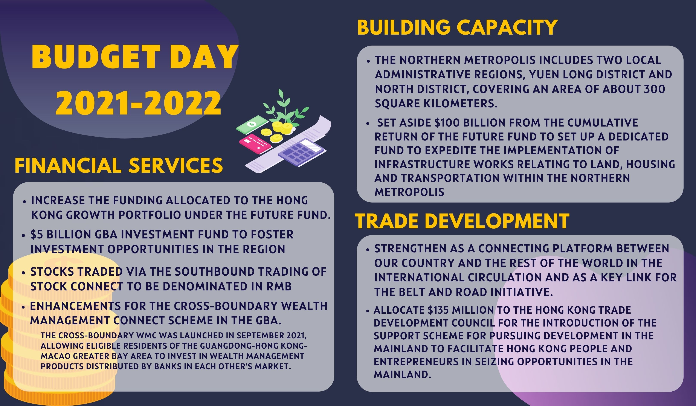
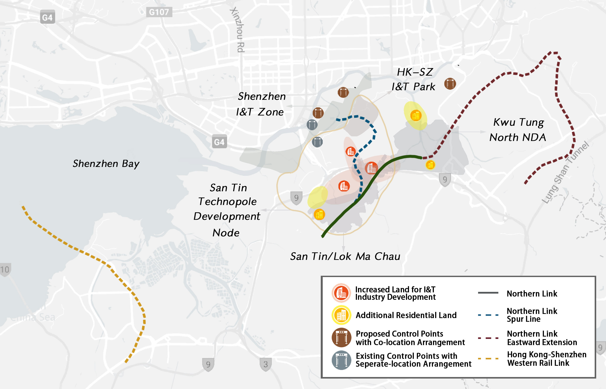

Hong Kong’s Financial Secretary Paul Chan Mo-po addressed the HK$170 billion budget for the city in today's
speech, with considerable mentions on integrating Hong Kong’s economy into the mainland China market and
national-level development.
Strengthening Hong Kong as a financial centre to integrate with mainland development
Hong Kong will enhance its status as an international financial centre in line with the 14th Five‑Year Plan by strengthening its status as an offshore renminbi hub and asset management centre, the Financial Secretary said in his budget speech today.“In the future, we will explore ways to further expand the channels for the two-way flow of cross- boundary RMB funds, as well as continue to promote the development of offshore RMB products, including introducing more diversified RMB wealth management products and bonds,” Financial Secretary, Paul Chan said .
The city launched the Southbound Trading of Bond Connect and the Cross‑boundary Wealth Management Connect Scheme in the Greater Bay Area (GBA) in September last year, which allows individual investors in the mainland to invest in offshore bonds through the Hong Kong bond market according to the Hong Kong Monetary Authority.
Chan said the government is exploring more enhancement measures for these investment initiatives, including expanding quotas and scope of eligible investment products, inviting more companies to participate, and improving distribution.
The Hong Kong Mortgage Corporation Limited will study and implement a pilot plan for infrastructure financing securitization within the year. According to the plan, the corporation is expected to issue infrastructure financing securitization products worth about HK$ 35.1 trillion (US$450 million) in the institutional market next year.
“On the one hand, the local infrastructure financing market will be more vigorous and diversified, and at the same time, market capital will be introduced into high-quality infrastructure projects,” Chan said.
Chan also proposed to set up a Greater Bay Area Investment Fund with half of the Future Fund’s allocation to the Hong Kong Growth Portfolio which is HK$5 billion, focusing on investment opportunities in the Greater Bay Area.
“As the relationship between Hong Kong and other cities in the GBA becomes closer, investing in the development of various priority industries in the region will not only inject more dynamism to the development of the region, but also bring economic and social benefits to Hong Kong,” he said.

Hong Kong eyes on stronger connections with the mainland market, budget briefs
Hong Kong's further enhanced accession to the mainland trade and business
“Integrating into the national development is an inevitable path for the Hong Kong economy.” the Financial Secretary said. The strategy of domestic and international dual circulation is a clear goal mentioned in the 14th five year development plan announced by Beijing. “The government will make good use of national policies and our own advantages and take the GBA as an entry point, proactively exploring the vast Mainland market and participating in the domestic circulation of the national economy,“ he said.“We will continue to strive to introduce more liberalization measures under the framework of the Mainland and Hong Kong Closer Economic Partnership Arrangement (CEPA), thereby creating more favorable conditions for Hong Kong enterprises to enter the mainland market.” he also mentioned the determination to become more open and more willing to integrate into the mainland.
CEPA is the special policy signed by the mainland government and the Hong Kong and Macao special administrative region governments, originally in response to the SARS virus and the Asian financial turmoil, intending to gradually reduce or eliminate tariff and non-tariff barriers to substantially all goods trade between the three parties.
To help freight traffic between Hong Kong and the mainland, the budget set out a plan for establishment and development of a logistics hub.
“The 14th Five-Year Plan expressly supports Hong Kong in developing high value-added maritime services, and states for the first time the support for enhancing Hong Kong’s status as an international aviation hub.” The secretary said.
In order to further strengthen trade exchanges between the mainland and Hong Kong， the Hong Kong Airport Authority plans to develop sea-air cargo transshipment between Hong Kong and the Great Bay Area. An upstream HKIA Logistics Park in Dongguan and an airside intermod a cargo handling facility at the HKIA will be set up. According to the Financial Secretary, this series of measures will eliminate repeated security procedures “This will allow export cargo from the mainland to complete security screening in advance and then be transported seamlessly to Hong Kong,” he said.
All goods entering Hong Kong from the mainland and to be sold overseas will be packaged and security checked at Hong Kong International Airport (HKIA) logistics park in Dongguan. After seamless delivery to the airside intermodal cargo handling facility at the HKIA, there is no need to repeat unpacking inspection. Instead, they can be directly transported overseas by air. And for goods transported from abroad to the mainland through Hong Kong, the security inspection procedures will also be reduced
Apart from that, the government plans to directly fund Hong Kong businessmen in the mainland. A total funding of HK$135 million to the TDC (Trade Development Council) will be allocated over the next three years for the introduction of the Support Scheme for Pursuing Development in the Mainland.
According to the Hong Kong and Macao affairs office of the Guangdong Province government, as of August 21, 2021, Shenzhen Qianhai cooperation zone has registered 11500 Hong Kong funded enterprises with a registered capital of 1.28 trillion yuan.
“The scheme will focus on those Mainland cities with larger numbers of Hong Kong business people and workers, with priority accorded to the GBA.” This initiative aims to support Hong Kong businessmen, professional service sectors and entrepreneurs in the mainland to better integrate into the overall situation of national development and seize opportunities.
LIM Yu Hong, a BBA graduate living in Tai Po, thinks that these policies will also attract young adults like him to start businesses in the mainland. "As long as these plans are implemented, I am certainly willing to start a business there,” he said. “But the mainland should also have more supporting measures, such as subsidized housing and social security because when Hong Kong people go back to the mainland to start a business, they will not only face capital problems, but also face some life and social problems,” he added
Land building for future integration: Making of the Northern Metropolis
The Northern Metropolis bordering the mainland is set to become an innovation and technology hub. In his budget speech, Financial Secretary, Paul Chan said HK$100 billion will be spent on speeding up construction of the new zone.
The strategy, firstly mentioned in the Policy Address 2021 last November, aims to transform remote districts boarding mainland city Shenzhen in the Northern New Territories into a new CBD and high-tech hub for Hong Kong.
“Both the Northern Metropolis Development Strategy (the Development Strategy) and Lantau Tomorrow plan are important initiatives for increasing land supply, through which housing supply can be substantially increased. The Northern Metropolis will provide ample land for I&T uses, which will foster I&T development in Hong Kong,” Paul Chan said today,
With an “Infrastructure-led” approach set for the area, the fund will be primarily used to support construction works relating to land, housing and transport development. The government has already kicked start the railway network development projects, which include the expansion of the current Northern Link and the building of Hong Kong-Shenzhen West Rail link connecting New Territories North CBD with Qianhai district in Shenzhen.

Transportation projects including the extension of the current Northern Link and Western Rail Link are under construction.
“The Northern Metropolis will provide synergy to speed up Hong Kong’s commercial cooperation with Shenzhen
and the Greater Bay Area as a whole,” said Billy Mak Sui-choi, a member of the Process Review Panel and the
Products Advisory Committee for the Securities and Futures Commission.
He said currently Hong Kong’s most developed districts, Central and Kowloon, are very far away from
Shenzhen, which is “problematic and time-consuming” for businesses between the two cities to interact and
integrate.
Shenzhen Bay Quality Development Circle
Comprising Nanshan and Qianhai district, two of the nation's richest districts. Home to tech giants
Tencent, Huawei and conglomerates like Ping’an.
Interfacing with the Yuen Long New Town, the Tin Shui
Wai New Town, in which the New Territories North Central Business District is set to share opportunities
with Shenzhen.

Hong Kong-Shenzhen Close Interaction Circle
The core region for future joint I&T industry development between Hong Kong and Shenzhen,
with San Tin Technopole as major construction.
Here, San Tin/ Lok Ma Chau and Fanling/Sheung Shui New Town directly connect with Futian and Luohu
district of Shenzhen through cross-boundary railway lines, an extension of the current MTR Northern
Link.
Mirs Bay/Yan Chau Tong Eco-recreation/tourism Circle
A region abundant with nature reserves, marine parks and geoparks, aiming to provide leisure and green tourism for residents of the two cities.

The overall planning of the Northern Metropolis.
“The construction of the Northern Metropolis will geographically link Hong Kong to Qianhai, Luo Hu and
Futian”, Dr. Choi said, “ those are some of the richest districts in the country and home for a great many
high-tech giants, financial and modern logistics service providers, “making integration with the mainland
market much easier.”